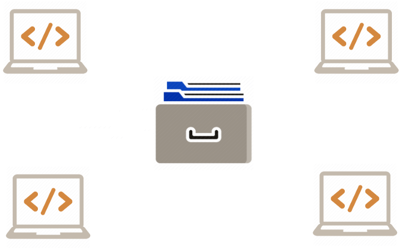

Welcome to
by Ovidiu Andrioaia, David Cirdan, Mateias Luciano and Angelo Xia

Say you're writing a
_
Building a website
Or even writing a short
In all of these cases...
Is here to help.
VCS helps you organize by managing the versions of your project

VCS also helps team efforts, by handling the logistics of files
2019
23
Oct
#1 Bobby Jones - First Commit
Prepared project files, installed node modules...
24
Oct
#2 Mariah Carey - Added css and js
Added function xyz, refactored initial code...
Let's make an example...
Because of this mistake, Bob lost
-
H
-
O
-
U
-
R
-
S
For the same mistake, a company can lose
-
T
-
H
-
O
-
U
-
S
-
A
-
N
-
D
-
S
of dollars
VCS advantages for solo devs:

Archive

Compare and recover
Conserve disk space
VCS advantages for teams:

Historical information

File sharing

Enforcing of good practices
VCS
can be...
CENTRALIZED
or...
DECENTRALIZED
In a CENTRALIZED VCS...
And in a DECENTRALIZED VCS...

THINGS TO AVOID
UPLOAD
SAVE LOCAL COPIES

Actions

Collaboration

- Backup
- Log
- Remote
- Easy teamwork
#include <stdio.h>
int main()
{
printf("Hello, World!");
return 0;
}
LUCIANO TODO: INSERTIONS DELETIONS
Let's say...
#include <stdio.h>
int main()
{
printf("Hello, World!");
return 0;
}
Blame

SLIDE 5
(PARTE 2) - Intro to Source Control: A Must-Have Tool for Programmers
What is...
- TEAM
- FOUNDATION
- SERVER
TFS is a web application built for software development teams who need a platform that can offer multiple tools, services and resources for a proper collaboration.
Here goes an image
SLIDE 7
(PARTE 2) - VSTS :- What is TFS ( Team foundation server ) ?

SLIDE 9
Git & GitHub Tutorial for Beginners #2 - Installing Git
Git feature

REPOSITORY
COMMIT
To create a repository, just type
bob@group6:
/Git-G6/reveal.js$
_
Display files changed
bob@group6:
/Git-G6/reveal.js$ (master)
_
bob@group6:
/Git-G6/reveal.js$ (master) git status
On branch master
Initial commit
Untracked files:
(use "git add <file>..." to update what will be committed)
index.html
nothing added to commit but untracked files present (use "git add" to track)
On branch master
Initial commit
Untracked files:
(use "git add <file>..." to update what will be committed)
index.html
nothing added to commit but untracked files present (use "git add" to track)
Add files to staging area
bob@group6:
/Git-G6/reveal.js$ (master)
_

bob@group6:
/Git-G6/reveal.js$ (master) git status
On branch master
Initial commit
Changes to be committed:
(use "git rm --cached <file>..." to unstage)
index.html
On branch master
Initial commit
Changes to be committed:
(use "git rm --cached <file>..." to unstage)
index.html
Commit files
bob@group6:
/Git-G6/reveal.js$ (master)
_
import React, { useState } from 'react';
function Example() {
const [count, setCount] = useState(0);
return (
<div>
<p>You clicked {count} times</p>
<button onClick={() => setCount(count + 1)}>
Click me
</button>
</div>
);
}
SLIDE 13
Git & GitHub Tutorial for Beginners #6 - Making Commits
SLIDE 14
Git & GitHub Tutorial for Beginners #7 - Undoing Things
Branches

Test new code
or
feature
git branch "name" // to create
git checkout "name" // to switch
git checkout -b "name" //is a shortcut for create and switch
git branch -d "name" // for delete
git branch -a "name" // to see
SLIDE 16
Git & GitHub Tutorial for Beginners #9 - Merging Branches (& conflicts)
SLIDE 17
(PARTE 1) - Git & GitHub Tutorial for Beginners #10 - Introduction to GitHub
SLIDE 18
(PARTE 2) - Git & GitHub Tutorial for Beginners #10 - Introduction to GitHub
SLIDE 19
(PARTE 1) - Git & GitHub Tutorial for Beginners #11 - Collaborating on GitHub
SLIDE 20
(PARTE 2) - Git & GitHub Tutorial for Beginners #11 - Collaborating on GitHub
FORKING
HOW

REQUEST